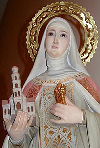

„Hoće li tko za mnom, neka se odreče samoga sebe, neka uzme svoj križ i neka ide za mnom.” (Mt 16,24)

Sveta Kunigunda, rođena oko 975. godine kao kći luksemburškog grofa, bila je žena iznimne naobrazbe i duboke pobožnosti. Iako je prvotno težila redovničkom životu, po želji roditelja udala se za bavarskog vojvodu Henrika, s kojim je 1014. godine u Rimu primila carsku krunu. Njihov je brak bio obilježen rijetkim skladom i dubokom međusobnom ljubavlju, a Kunigunda je bila careva najpouzdanija savjetnica i oslonac u svim ključnim političkim pitanjima i odlukama prostranog carstva.
Posebno se istaknula u osnivanju biskupije u Bambergu i brojnim dobročinstvima u korist Crkve i siromaha. Budući da par nije mogao imati djece, Henrik je prema tadašnjim običajima mogao otpustiti Kunigundu zbog neplodnosti, no on je to odbio, ostajući joj vjeran do smrti. Kunigunda je imala presudnu ulogu u duhovnom rastu svoga supruga, potičući ga na put kršćanske savršenosti, zbog čega su oboje kasnije proglašeni svetima.
Nakon Henrikove smrti 1024. godine, Kunigunda je ostvarila svoju mladenačku želju te je sjajnu carsku odoru zamijenila skromnim redovničkim odijelom u samostanu Kaufungen, koji je sama utemeljila. Tamo je provela posljednjih petnaest godina života u poniznosti, molitvi i radu, sve do smrti 3. ožujka 1040. Danas počiva uz supruga u bamberškoj katedrali, a štuje se kao zaštitnica trudnica, rodilja i djece.